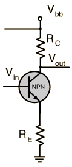

Feedback in the Common Emitter
|
The input/output relationships: can be combined in the form which when compared to the form  gives |  |
The application of negative feedback in this case with the value of B shown leads to an amplification which corresponds to the approximate voltage gain obtained by other approaches: |
Electronics concepts
Feedback concepts
| HyperPhysics*****Electricity and magnetism | R Nave |